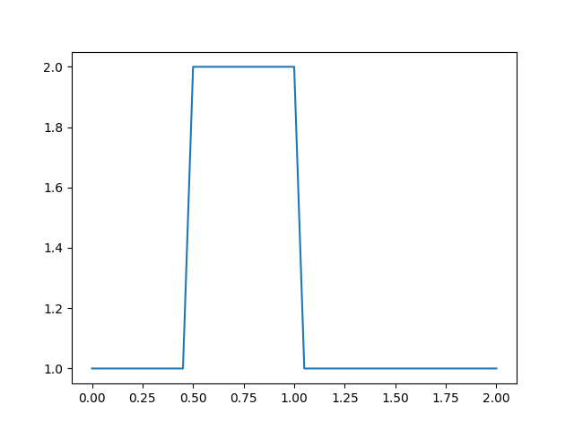
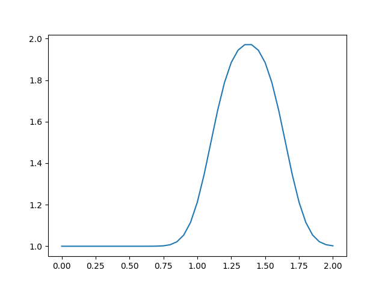
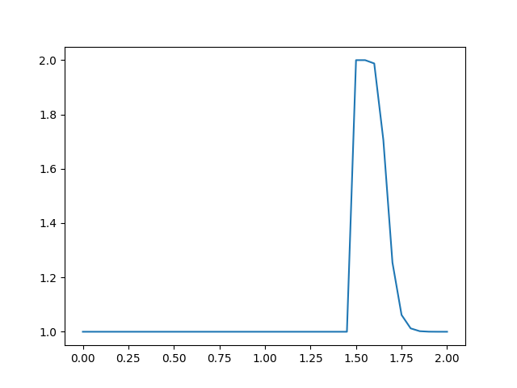
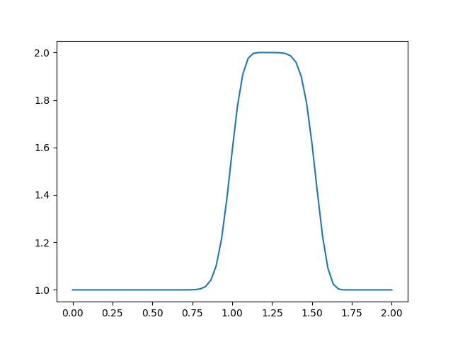
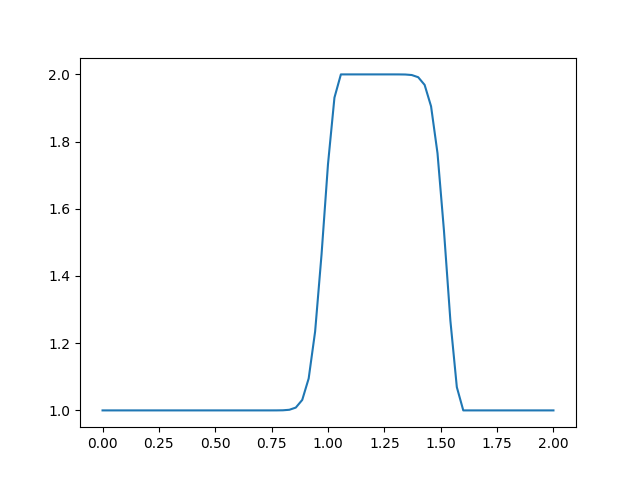
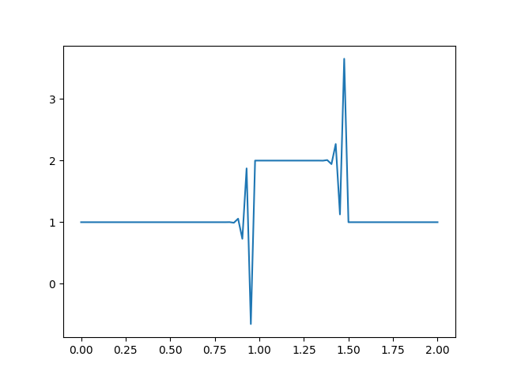
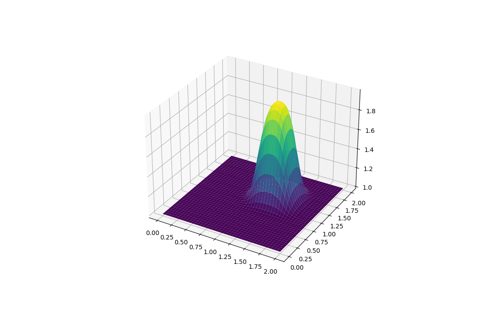
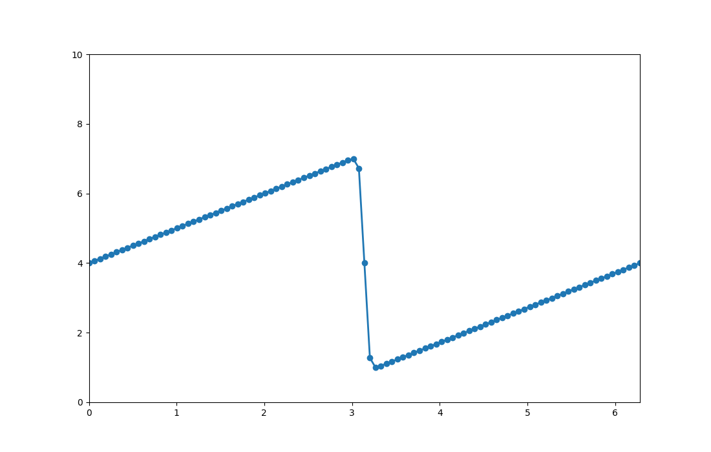
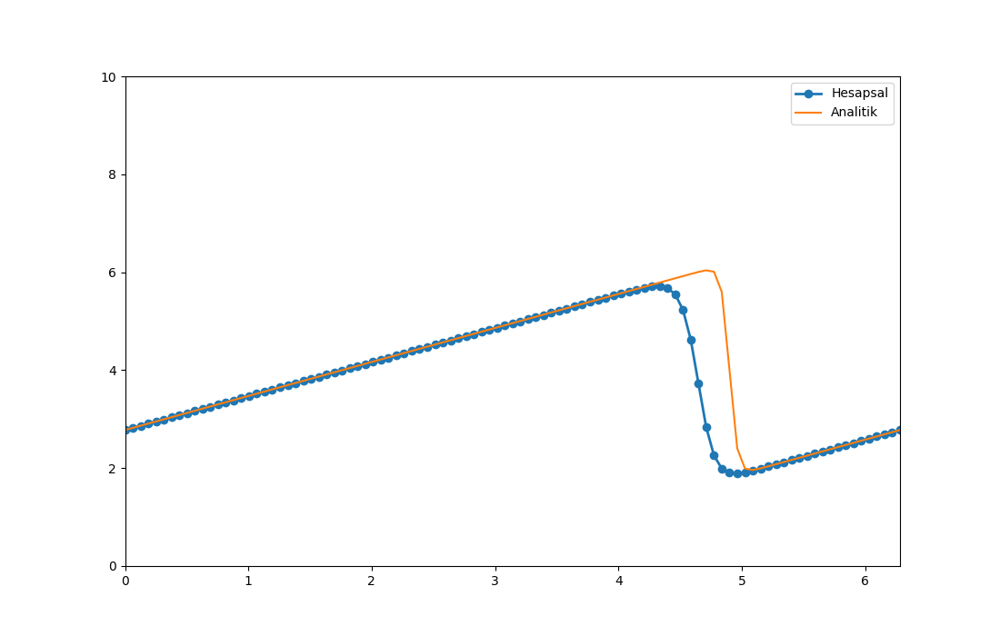

Hesapsal Sıvı Dinamiğine (Computational Fluid Dynamics -CFD-) Giriş
Tek Boyutlu Lineer Taşınım Akımı (Convection)
Tek boyutlu lineer taşınım akımı, ya da tek boyutlu lineer yatay iletim (advection), CFD hakkında bir şeyler öğrenmek için güzel fırsatlar içeriyor. Bu ufak denklemin bize ne kadar çok şey öğreteceğini görmek bizi şaşırtabilir. Denklem,
$$ \frac{\partial u}{\partial t} + c \frac{\partial u}{\partial x} = 0 \qquad (2) $$
Dikkat bu bir dalga denklemi olarak bilinir, fakat esas dalga denkleminin kısmi türevsel formu ikinci kısmi türevi içeriyor, bkz [2]. Üstteki denklem verili başlangıç şartlarına göre bir basit dalganın şekil değiştirmeden $c$ hızında yayılmasını temsil eder. Başlangıç şartlarını $u(x,0) = u_0(x)$ olarak gösterirsek, denklemin kesin analitik çözümü $u(x,y) = u_0(x-ct)$.
Üstteki formülü süreklilik denkleminin [3] bir formu olarak ta görebiliriz [4, sf. 557]. Süreklilik denklemi
$$ \frac{\partial \rho}{\partial t} + \nabla \cdot (\rho \bar{u} ) = 0 $$
idi, bu formülü tek boyutta düşünürsek ve sabit hız $\bar{u} = c$ alırsak (2)'ye ulaşırız.
Denklemi hem zaman, hem uzay bağlamında ayrıksallaştıracağız. Türev tanımından (ve limit ifadesini çıkartınca),
$$ \frac{\partial u}{\partial x} \approx \frac{u(x+\Delta x) - u(x)}{\Delta x} $$
olduğunu biliyoruz. Şimdi zamanda İleri Farklılık (Forward Difference), uzayda Geriye Farklılık (Backward Difference) kullanalım.. Ve eğer $x$ eksenini $N$ parçaya ayırırsak ve bu parçaları $i=0,..,N$ ile indekslersek, ve en ufak zaman adımını da $\Delta t$ ile gösterip o adımı $n$ ile indislersek,
$$ \frac{u_i^{n+1} - u_i^n}{\Delta t} + c \frac{u_i^{n} - u_{i-1}^n}{\Delta x} = 0 $$
ki $n$ ve $n+1$ ardı ardına olan iki zaman adımı, $i-1$ ve $i$ ise ayrıksallaştırılmış iki $x$ yeri oluyor. Eğer başlangıç koşulları verilmiş ise o zaman bu ayrıksal sistemde tek bilinmeyen $u_i^{n+1}$'dir. Denklemi tekrar düzenlersek bilinmeyen için yeni bir formül elde edebiliriz,
$$ u_i^{n+1} = u_i^n - c \frac{\Delta t}{\Delta x} ( u_i^n - u_{i-1}^n ) \qquad (1) $$
Yeri temsil eden $x$ eksenini eşit aralıklı parçalara böleceğiz, bir tek boyutlu
ızgara yaratacağız, genişlik 2 birim olacak, nx değişkeni kaç tane ızgara
noktası olduğunu tanımlayacak, dx iki nokta arasındaki uzaklık.
import time, sys
nx = 41
dx = 2 / (nx-1)
nt = 25
dt = .025
c = 1
Başlangıç şartlarını tanımlamak lazım, başlangıç hızı $u_0$ aralık $0.5 \leq x \leq 1$ içinde $u = 2$, diğer her yerde $u = 1$.
u = np.ones(nx)
u[int(.5 / dx):int(1 / dx + 1)] = 2
print(u)
[1. 1. 1. 1. 1. 1. 1. 1. 1. 1. 2. 2. 2. 2. 2. 2. 2. 2. 2. 2. 2. 1. 1. 1.
1. 1. 1. 1. 1. 1. 1. 1. 1. 1. 1. 1. 1. 1. 1. 1. 1.]
plt.plot(np.linspace(0, 2, nx), u);
plt.savefig('compscieng_app45cfd1_01.png')

Üstteki bir fonksiyon türü aslında, ona görüntüsü sebebiyle "şapka fonksiyonu" ismi de veriliyor.
Şimdi taşınım akımı denkleminin ayrıksal kodlamasına gelelim, burada sonlu farklılık (finite difference) yaklaşımı kullanıyoruz, $u$ vektörü içindeki her öge için (1) formülünü işleteceğiz.
un = np.ones(nx)
for n in range(nt):
un = u.copy()
for i in range(1, nx):
u[i] = un[i] - c * dt / dx * (un[i] - un[i-1])
Üstteki işlemle zamanı ileri sardık ve fonksiyon belli bir noktaya geldi. Nereye geldi?
plt.plot(np.linspace(0, 2, nx), u);
plt.savefig('compscieng_app45cfd1_02.png')

Evet, başlangıç fonksiyonu hakikaten sağa doğru taşındı. Fakat artık fonksiyon
bir şapka değil. Ne oldu? Sonuç yaklaşık temsilin kalitesiyle alakalı, dx
ve dt küçültüldükçe kalite artacaktır, ve şapkaya daha çok benzeyen
sonuçlar görülecektir.
Gayrı Lineer Taşınım Akımı (Nonlinear Convection)
Şimdi biraz önceki teknikleri kullanarak gayrı lineer taşınım akımı kodlayacağız, tek boyutta denklem,
$$ \frac{\partial u}{\partial t} + u \frac{\partial u}{\partial c} = 0 $$
Dikkat edersek önceki denklemdeki $c$ ile çarpım yerine şimdi $u$ ile çarpım var, bu sebeple formülün ikinci terimi gayrı lineer hale geldi. Eğer ayrıksallaştırma işlemini tekrar uygularsak, alttaki sonuca erişiriz,
$$ u_i^{n+1} = u_i^n - u_i^n \frac{\Delta t}{\Delta x} ( u_i^n - u_{i-1}^n ) $$
nx = 41
dx = 2 / (nx - 1)
nt = 20
dt = .025
u = np.ones(nx)
u[int(.5 / dx) : int(1 / dx + 1)] = 2
un = np.ones(nx)
un = np.ones(nx)
for n in range(nt):
un = u.copy()
for i in range(1, nx):
u[i] = un[i] - un[i] * dt / dx * (un[i] - un[i-1])
plt.plot(np.linspace(0, 2, nx), u);
plt.savefig('compscieng_app45cfd1_03.png')

Yakınsama (Convergence)
Lineer taşınım hesabında ortaya çıkan tepe şeklinin ızgara çözünülürlüğü ile
alakalı olduğunu söylemiştik. Bunu birkaç farklı çözünürlük ile deneyerek
görelim. İlk gördüğümüz sonuç nx=41 kullandı. Arttıralım,
def linearconv(nx):
dx = 2 / (nx - 1)
nt = 20
dt = .025
c = 1
u = np.ones(nx)
u[int(.5/dx):int(1 / dx + 1)] = 2
un = np.ones(nx)
for n in range(nt):
un = u.copy()
for i in range(1, nx):
u[i] = un[i] - c * dt / dx * (un[i] - un[i-1])
plt.plot(np.linspace(0, 2, nx), u);
linearconv(61)
plt.savefig('compscieng_app45cfd1_04.png')

linearconv(71)
plt.savefig('compscieng_app45cfd1_05.png')

Gittikçe daha fazla şapka fonsiyonuna benzer sonuçlar alıyoruz. Şimdi dikkat, bir kez daha arttıralım,
linearconv(85)
plt.savefig('compscieng_app45cfd1_06.png')

Bu sonuç şapka fonksiyonuna benzemiyor. Ne oldu?
Hesaplananları düşünürsek, yer ekseni üzerinde dalganın hareketini hesaplıyoruz,
fakat her adımda $\Delta t = 0.025$ farzederk bu hesapları yapıyoruz. Üstteki
yanlış sonuçta $\Delta t$ zaman aralığında öyle bir adım attık ki bu adım
dx'in büyüklüğünden daha fazla. Bu durum ilk denemelerde ortaya çıkmadı
çünkü dx yeterince büyük tutulmuştu. Fakat onu küçültükçe bir noktada
hesap patladı.
Stabilite için $\Delta t$ adımını $\Delta x$ ile ilişkilendirecek bir formül faydalıdır, böyle bir formül var,
$$ \sigma = \frac{u \Delta t}{\Delta x} \le \sigma_{max} $$
$u$ dalganın hızı, $\sigma$ degiskeni Courant sayısı, ve $\sigma_{max}$ stabiliteyi sağlayacak üst limit. Çoğunlukla $\sigma_{max} = 1$ seçilir. Bu ilişkinin türetilmesini [7]'de bulabiliriz.
Diffusion (Yayınım) Denklemi
Tek boyuttaki yayınım denklemi,
$$ \frac{\partial u}{\partial t} = \nu \frac{\partial^2 u}{\partial x^2} $$
Dikkat edersek bu denklemde bir ikinci kısmı türev var. Denklemin o kısmını Merkezi Farklar yaklaşımı ile ayrıksal hale getireceğiz, bu yaklaşım İleri Farklar ve Geriye Farklar yaklaşımlarının birleştirilmesi ile elde edilir.
Önce Taylor serilerini hatırlarsak, genel tanım
$$ f(x+h) = f(x) + h f'(x) + \frac{h^2}{2} f"(x) + ... $$
Biz $u_{i+1}$ ve $u_{i-1}$ açılımını Taylor serisi ile yapmak istiyoruz, daha önce belirttiğimiz gibi bir önceki ve sonraki $x$ değerleri $\Delta x$ uzaklığında, yani bir önceki
$$ u(x-\Delta x) = u(x) - \Delta x f'(x) + \frac{h^2}{2} u"(x) + ... $$
İşaretin eksi olmasına dikkat, ve sonraki
$$ u(x+\Delta x) = u(x) + \Delta x f'(x) + \frac{h^2}{2} u"(x) + ... $$
Şimdi indisleriyle $u$ için ve [1]'deki formuyla yazalım,
$$ u_{i+1} = u_i + \Delta x \frac{\partial u}{\partial x}\bigg|_i + \frac{\Delta x^2}{2} \frac{\partial ^2 u}{\partial x^2}\bigg|_i + \frac{\Delta x^3}{3!} \frac{\partial ^3 u}{\partial x^3}\bigg|_i + O(\Delta x^4) $$
$$ u_{i-1} = u_i - \Delta x \frac{\partial u}{\partial x}\bigg|_i + \frac{\Delta x^2}{2} \frac{\partial ^2 u}{\partial x^2}\bigg|_i - \frac{\Delta x^3}{3!} \frac{\partial ^3 u}{\partial x^3}\bigg|_i + O(\Delta x^4) $$
Bir üstteki denklemin ilk hali $u_i = u_{i-1} ... $ ile ama ufak bir yer değişimi ile görülen biçim elde edilmiş.
Son iki formülü toplarsak bazı terimlerin ters işaretli olması sebebiyle iptal olacağını görebiriliz. Ayrıca yaklaşık temsil açısından $O(\Delta x^4)$ ve daha üstü kuvvetleri yok sayarsak,
$$ u_{i+1} + u_{i-1} = 2u_i+\Delta x^2 \frac{\partial ^2 u}{\partial x^2}\bigg|_i + O(\Delta x^4) $$
$\frac{\partial ^2 u}{\partial x^2}\bigg|_i$ için çözersek ve tekrar düzenlersek,
$$ \frac{\partial ^2 u}{\partial x^2}=\frac{u_{i+1}-2u_{i}+u_{i-1}}{\Delta x^2} + O(\Delta x^2) $$
$O(\Delta x^2)$ ifadesi $O(\Delta x^4)$ terimi $\Delta x^2$ ile bölününce ortaya çıktı.
Artık 1D yayınım formülünün nihai ayrıksal halini yazabiliriz,
$$ \frac{u_{i}^{n+1}-u_{i}^{n}}{\Delta t} = \nu\frac{u_{i+1}^{n}-2u_{i}^{n}+u_{i-1}^{n}}{\Delta x^2} $$
Daha önce olduğu gibi başlangıç koşuları tanımlı ise tek bilinmeyen $u_{i}^{n+1}$, bu bilinmeyen eşitliğin solunda kalacak şekilde tekrar düzenlersek,
$$ u_{i}^{n+1} = u_{i}^{n}+\frac{\nu\Delta t}{\Delta x^2}(u_{i+1}^{n}-2u_{i}^{n}+u_{i-1}^{n}) $$
Üstteki denklem bize çözümü adım adım ilerletmemizi sağlayacak. Ama bir başlangıç koşuluna ihtiyacımız var, daha önceki favorimize dönebiliriz, şapka fonksiyonu. $t=2$'de $u=0$, $0.5\le x\le 1$ aralığında ise $u=1$.
nx = 41
dx = 2 / (nx - 1)
nt = 20
nu = 0.3
sigma = .2
dt = sigma * dx**2 / nu
u = np.ones(nx)
u[int(.5 / dx):int(1 / dx + 1)] = 2
un = np.ones(nx)
for n in range(nt):
un = u.copy()
for i in range(1, nx - 1):
u[i] = un[i] + nu * dt / dx**2 * (un[i+1] - 2 * un[i] + un[i-1])
plt.plot(np.linspace(0, 2, nx), u);
plt.savefig('compscieng_app45cfd2_01.png')

2D Taşınım (2D Convection)
2 boyuta geçme zamanı geldi. 2D lineer taşınım akımını (convection) temsil eden parçalı kısmi diferansiyel denklem,
$$ \frac{\partial u}{\partial t} + c\frac{\partial u}{\partial x} + c\frac{\partial u}{\partial y} = 0 $$
Bu 1D lineer taşınım akımı ile neredeyse aynı formda, sadece şimdi tek yersel boyut yerine iki tane boyutumuz var, $x$ ve $y$.
Ayrıksal hale getirmek için aynı yaklaşımı kullanacağız, zaman adımlarını ileri farklar, konumsal değişkenleri ise geriye farklar yöntemi ile ayrıksal yapacağız. 1D durumda $i$ altsimgesini konumda olan hareketlilik için kullanmıştık, $u_{i}^n-u_{i-1}^n$ mesela. Şimdi, 2D durumda, ikinci bir altsimge $j$ ekliyoruz, $y$ boyutunu böylece indislemiş olacağız.
Tüm bunları kullanarak ayrıksal forma erişmek zor değil,
$$ \frac{u_{i,j}^{n+1}-u_{i,j}^n}{\Delta t} + c\frac{u_{i, j}^n-u_{i-1,j}^n}{\Delta x} + c\frac{u_{i,j}^n-u_{i,j-1}^n}{\Delta y}=0 $$
Daha önce olduğu gibi tek bilinmeyene göre tekrar düzenleyelim,
$$ u_{i,j}^{n+1} = u_{i,j}^n-c \frac{\Delta t}{\Delta x}(u_{i,j}^n-u_{i-1,j}^n) - c \frac{\Delta t}{\Delta y}(u_{i,j}^n-u_{i,j-1}^n) $$
Denklemi alttaki başlangıç şartlarına göre çözeceğiz,
$$ u(x,y) = \begin{cases} \begin{matrix} 2\ & 0.5 \leq x, y \leq 1 & \text{için} \cr 1\ & \text{diğer her yerde} \end{matrix}\end{cases} $$
Sınır şartları
$$ u = 1\ \text{değeri } \begin{cases} \begin{matrix} x = 0,\ 2 \cr y = 0,\ 2 \end{matrix}\end{cases} \text{ için } $$
from mpl_toolkits.mplot3d import Axes3D
from matplotlib import cm
nx = 81
ny = 81
nt = 100
c = 1
dx = 2 / (nx - 1)
dy = 2 / (ny - 1)
sigma = .2
dt = sigma * dx
x = np.linspace(0, 2, nx)
y = np.linspace(0, 2, ny)
u = np.ones((ny, nx)) ##create a 1xn vector of 1's
un = np.ones((ny, nx)) ##
u[int(.5 / dy):int(1 / dy + 1),int(.5 / dx):int(1 / dx + 1)] = 2
fig = plt.figure(figsize=(11, 7), dpi=100)
ax = fig.gca(projection='3d')
X, Y = np.meshgrid(x, y)
surf = ax.plot_surface(X, Y, u[:], cmap=cm.viridis)
plt.savefig('compscieng_app45cfd3_01.png')

İki boyutta zamanı ileri saralım şimdi. Tüm $i$ ve $j$'leri işleyebilmek için
bir içiçe geçmiş döngü gerekiyor bize. Python dilinde for kullanmak çok
optimal değildir, ama alttaki kod neler olduğunu gösterebilmek için yardımcı
olacaktır.
u = np.ones((ny, nx))
u[int(.5 / dy):int(1 / dy + 1), int(.5 / dx):int(1 / dx + 1)] = 2
for n in range(nt + 1):
un = u.copy()
row, col = u.shape
for j in range(1, row):
for i in range(1, col):
tmp1 = (c * dt / dx * (un[j, i] - un[j, i - 1]))
tmp2 = (c * dt / dy * (un[j, i] - un[j - 1, i]))
u[j, i] = (un[j, i] - tmp1 - tmp2)
u[0, :] = 1
u[-1, :] = 1
u[:, 0] = 1
u[:, -1] = 1
fig = plt.figure(figsize=(11, 7), dpi=100)
ax = fig.gca(projection='3d')
surf2 = ax.plot_surface(X, Y, u[:], cmap=cm.viridis)
plt.savefig('compscieng_app45cfd3_02.png')

Burgers'in Denklemi
Bu denklem tek boyutta şuna benziyor
$$ \frac{\partial u}{\partial t} + u \frac{\partial u}{\partial x} = \nu \frac{\partial ^2u}{\partial x^2} $$
Görüldüğü gibi bu formül gayrı lineer taşınım akımı (convection) ile yayınım (diffusion) formüllerinin birleşimi. O zaman denklemi önce gördüğümüz teknikler ile ayrıksal hale getirebiliriz.
$$ \frac{u_i^{n+1}-u_i^n}{\Delta t} + u_i^n \frac{u_i^n - u_{i-1}^n}{\Delta x} = \nu \frac{u_{i+1}^n - 2u_i^n + u_{i-1}^n}{\Delta x^2} $$
Daha önce olduğu gibi başlangıç koşulumuz var, ona göre denklemi tekrar düzenliyoruz,
$$ u_i^{n+1} = u_i^n - u_i^n \frac{\Delta t}{\Delta x} (u_i^n - u_{i-1}^n) + \nu \frac{\Delta t}{\Delta x^2}(u_{i+1}^n - 2u_i^n + u_{i-1}^n) $$
Bu örnekte farklı bir başlangıç şartı kullanacağız.
$$ u = -\frac{2 \nu}{\phi} \frac{\partial \phi}{\partial x} + 4 $$
$$ \phi = \exp \bigg(\frac{-x^2}{4 \nu} \bigg) + \exp \bigg(\frac{-(x-2 \pi)^2}{4 \nu} \bigg) $$
Bu başlangıç şartlarına göre Burgers denkleminin analitik çözümü biliniyor,
$$ u = -\frac{2 \nu}{\phi} \frac{\partial \phi}{\partial x} + 4 $$
$$ \phi = \exp \bigg(\frac{-(x-4t)^2}{4 \nu (t+1)} \bigg) + \exp \bigg(\frac{-(x-4t -2 \pi)^2}{4 \nu(t+1)} \bigg) $$
Sınır şartı
$$ u(0) = u(2\pi) $$
Fakat başlangıç şartını belli ızgara noktalarında işletebilmek istiyoruz, fakat
üstteki formülde çetrefil bir form var, birşeylerin türevi vs var. Ne yapacağız?
Paket sympy kullanılabilir.
import sympy
from sympy.utilities.lambdify import lambdify
from sympy import init_printing
init_printing(use_latex=True)
x, nu, t = sympy.symbols('x nu t')
phi = (sympy.exp(-(x - 4 * t)**2 / (4 * nu * (t + 1))) +
sympy.exp(-(x - 4 * t - 2 * sympy.pi)**2 / (4 * nu * (t + 1))))
phiprime = phi.diff(x)
u = -2 * nu * (phiprime / phi) + 4
ufunc = lambdify((t, x, nu), u)
print(ufunc(1, 4, 3))
3.49170664206445
nx = 101
nt = 100
dx = 2 * np.pi / (nx - 1)
nu = .07
dt = dx * nu
x = np.linspace(0, 2 * np.pi, nx)
un = np.empty(nx)
t = 0
u = np.asarray([ufunc(t, x0, nu) for x0 in x])
plt.figure(figsize=(11, 7), dpi=100)
plt.plot(x, u, marker='o', lw=2)
plt.xlim([0, 2 * np.pi])
plt.ylim([0, 10]);
plt.savefig('compscieng_app45cfd2_02.png')

for n in range(nt):
un = u.copy()
for i in range(1, nx-1):
u[i] = un[i] - un[i] * dt / dx *(un[i] - un[i-1]) + nu * dt / dx**2 *\
(un[i+1] - 2 * un[i] + un[i-1])
u[0] = un[0] - un[0] * dt / dx * (un[0] - un[-2]) + nu * dt / dx**2 *\
(un[1] - 2 * un[0] + un[-2])
u[-1] = u[0]
u_analytical = np.asarray([ufunc(nt * dt, xi, nu) for xi in x])
plt.figure(figsize=(11, 7), dpi=100)
plt.plot(x,u, marker='o', lw=2, label='Hesapsal')
plt.plot(x, u_analytical, label='Analitik')
plt.xlim([0, 2 * np.pi])
plt.ylim([0, 10])
plt.legend();
plt.savefig('compscieng_app45cfd2_03.png')

Alternatif Anlatim [4, sf. 559]
Tek boyutta Burgers'in denklemi,
$$ \frac{\partial u}{\partial t} + \epsilon u \frac{\partial u}{\partial x} = 0 $$
olarak ta gösterilebilir. Denklemin muhafazakar formu (ayrıksallaştırmada işi kolaylaştırıyor),
$$ \frac{\partial u}{\partial t} + \epsilon \frac{\partial (u^2 / 2)}{\partial x} = 0 $$
$u^2$ nereden geldi? $u^2$ üzerinde $\partial / \partial x$ türevi uygulanınca Zincirleme Kanunu ile $2 u \cdot \partial u / \partial x$ elde ederdik, o zaman bu formülü 2 ile bölerek iki üstteki forma erisebiliriz.
Bu denklem taşınım formülünün bir şekli bir anlamda, eğer dalga hızı $c = \epsilon u$ dersek. Dikkat edersek bu durumda dalga hızı dalga boyuna (amplitude) oranlı hale geliyor, yani dalganın üst tarafında hız daha artacak. Denkleme eklenen bir gayri lineerlik ilginç davranışlara yol açıyor. Taşınım formülünde dalganın her kısmı aynı hızda hareket eder, "taşınır", ve bu sebeple dalga şeklinde bir değişim olmaz. Ama dalganın üst kısmı alt kısmına göre daha hızlı hareket ederse şekil değişimi olur, dalganın üstü daha ileri gider, şok dalgası (shock wave) denen durumu ortaya çıkartır.
Kaynaklar
[1] Barba, 12 steps to Navier–Stokes, Ders 1, https://nbviewer.jupyter.org/github/barbagroup/CFDPython/tree/master/lessons/
[2] Bayramlı, Fizik, Isı ve Dalga Denklemlerini Türetmek
[3] Bayramlı, Fizik, Akış Dinamiği
[4] Landau, Computational Physics
[5] Mittleman, Applied Electromagnetics ENGN1560 Brown Lecture
[6] Logan, Applied Mathematics, Third Edition
[7] Bayramlı, Hesapsal Bilim, Dalga Denklemi